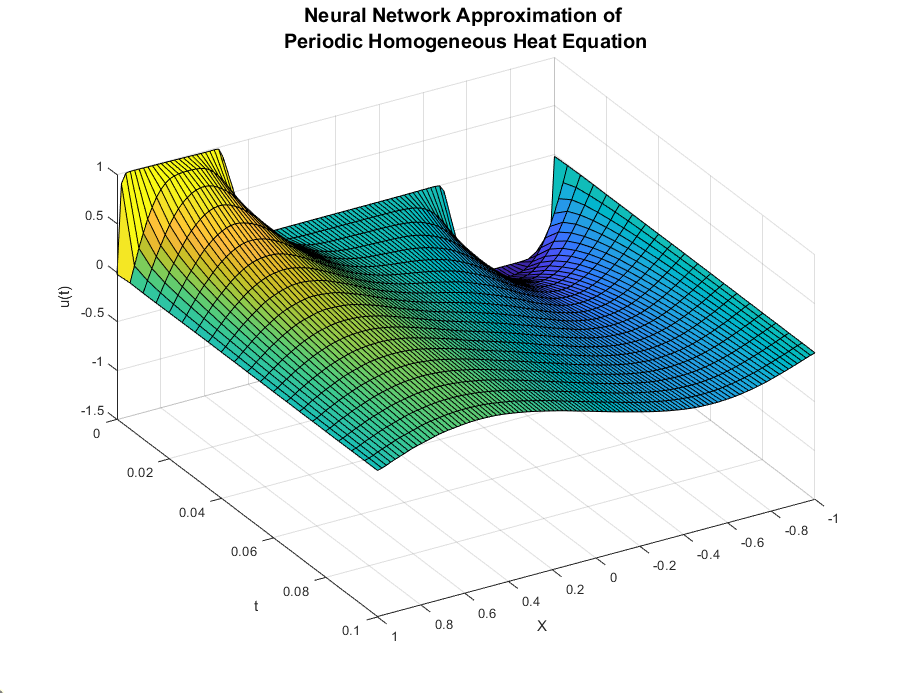

ATTICUS REX
Innovation and Research
Modeling
Evaluating Nonlinear Classification Methods for Valuation Changes in Financial Time-Series Data and Portfolio Optimization:
This paper investigates Adaptive Boosting (AdaBoost), Kernel Ridge Regression, and Kernel Support Vector Machines and their ability to predict valuation changes in Exon Mobil stock augmented with exogenous regressors of oil price per barrel, S&P 500 data, google search data, and electric car demand. Further, this report also investigates applying the AdaBoost algorithm to high-frequency trading, optimized and diversified by applying Markowitz Portfolio theory to form a convex minimization problem. The report found that AdaBoost outperformed KRR, and KSVM, especially when the number of rounds of boosting was increased. Further, the portfolio optimization algorithm converged on six companies to apply the algorithm to and outputted the optimal allocation of capital to each strategy. This has strong implications in the field of quantitative finance and was demonstrated to be profitable in this paper.
Discovering Epidemiological ODE Models from Data:
This project seeks to discover governing differential equations directly from data to determine the overall course of an epidemic. The two methodologies used to accomplish this will be the popular SINDy algorithm, developed by Brunton and Kutz et al. as well as the symbolic regression model applied to the derivative of the model. The group successfully used both methods to recover the SIR model from synthetic data with noise artificially added and to predict COVID-19 data. The PySR model, when effectively regularized showed promise in being able to robustly recover governing differential equations in the presence of noisy data.
Dynamic Traffic Network Simulation and Modeling the Impact of Pluvial Flash Flooding:
In contemporary transportation systems, the management of traffic flow under heavy load and unpredictable events such as flash floods are a critical challenge. The conventional static traffic assignment, where routes are fixed at the onset, is insufficient in addressing real-time variations in trip volumes, accidents, work zones, and weather conditions. Dynamic Traffic Assignment (DTA) is a pragmatic solution, adapting routing strategies continuously to evolving traffic conditions. Existing navigation services, while adept at adapting to incidents like accidents and road closures, often neglect unreported events like flash floods, posing a significant threat to both drivers and system integrity. By simplifying the traffic network setting, we will replicate diverse flooding intensities, enabling comprehensive evaluation of our dynamic traffic assignment strategy. By systematically analyzing these simulations, our research aims to establish a robust and adaptive framework for rerouting under flash flood conditions, thereby enhancing the resilience and safety of modern transportation networks.

Echo State Networks for Dynamical System Modeling:
This paper develops a framework for improving upon traditional regression methods to model discrete nonlinear dynamical systems. This framework is derived from a branch of recurrent neural-networks called Echo State Networks (ESNs). This report compares this methodology to the famous Sparse Identification of Nonlinear Dynamics (SINDy) framework developed by Brunton et al. This investigation specifically analyzes the Lorenz System as an example nonlinear and chaotic system. In the models investigated within this report, the Linear ESN model outperforms the SINDy algorithm when noise in the system is sufficiently low. The SINDy algorithm is also far more computationally intensive, requiring much more data to yield comparable results. In addition, SINDy requires sampling of a numerical derivative of a signal. Using finite difference methods amplifies any noise present in the signal, and thus, a direct, discrete method for calculating a regularized derivative is proposed, based on the Total Variation Regularized Derivative (TVD).
Full Report

Using Physics Informed Neural Networks (PINNs) to Solve the Heat Equation:
This paper examines the use of a novel technique that uses the auto-differentiation ca-
pability of neural networks to solve the heat equation. This is a method that was proposed
in Raissi, 2019 et al. This method makes use of neural networks as universal function
approximators to match the solution to a partial differential equation.
Dopamine, Mimicry, and Value Alignment: Artificial Intelligence and Addiction:
Computer scientists, philosophers, economists, and many others have voiced concerns about Artificial Intelligence (AI) for decades. This paper provides a framework and a review of how AI can be addictive by mimicking neuropleasurable stimuli for humans. It argues that this problem is exacerbated when the values of the humans interacting with AI and the values of the AI are poorly aligned. The paper examines the role of the dopaminergic reward system in powerful behavior reinforcement, what economic gains and externalities this causes, and how this may disproportionately affect certain subsets of the population. This paper also proposes a model to illustrate how, when considering factors of time, effort, and expected reward, the magnitude of the reward is not deterministic of human action. Lastly, the paper examines ethical frameworks and contemporary theories governing the use of AI to produce large-scale addiction, big-nudging, and general manipulation.
Full Report